Техническое обслуживание (ТО) печатных машин
Все печатные машины офсетного типа рассчитаны на долгосрочную эксплуатацию. Очень важным фактором для нормальной эксплуатации машины является своевременное проведение технического обслуживания (ТО). Вовремя проведенное ТО поможет не только избавиться от многих проблем при печати, но и продлить ресурс оборудования.
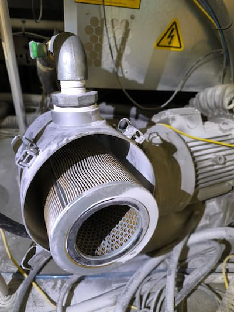
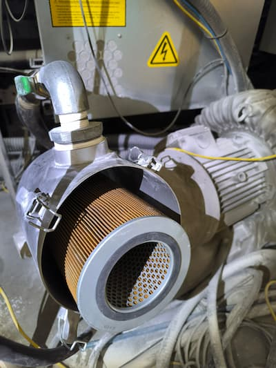
По периодичности проведения ТО может быть: ежесменным, еженедельным, ежемесячным, ежеквартальным и ежегодным. По мере того как увеличивается срок проведения ТО от ежесменного до ежегодного, в него добавляются дополнительные пункты по обслуживанию машины, такие как смазка дополнительных контрольных точек, проверка и замена масла в редукторах и гидростанциях, а также чистка и проверка работоспособности разных агрегатов машины.
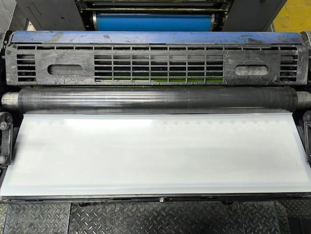
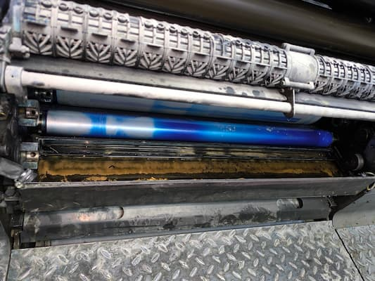
Как правило техническое обслуживание проводится сверху вниз, от верних секций к нижним, от красочных ящиков (кипсеек) к печатным и передаточным цилиндрам. Но бывает и отдельно взятое ТО, например по чистке «листопроводки», когда это обусловлено особенностями эксплуатации машины при печати на бумагах низкого качества, либо техническими проблемами.
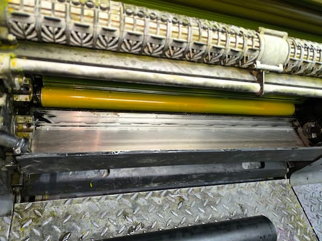
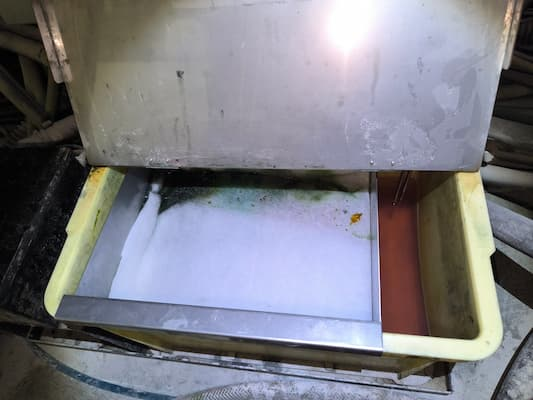
В ежесменное ТО включают такие работы как: визуальная проверка наличия масла и смазки, сброс конденсата с пневмосистемы, проверка параметров увлажняющего раствора, проверка наличия технических жидкостей (смывка и т. д.), чистка контактных колец цилиндров печатной группы, чистка офсетного полотна с регенерирующими растворами, чистка самонаклада и приемки, чистка переводных и печатных цилиндров.
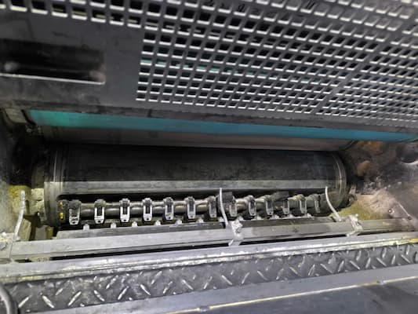
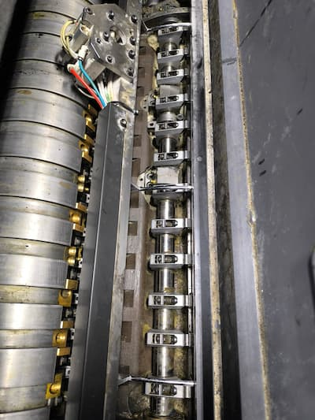
В еженедельное ТО, кроме выше перечисленных работ, добавляются работы по смазке контрольных точек, предусмотренных регламентом на этом этапе эксплуатации, а также работы по замене краски, в которой появляется бумажная пыль и увлажняющего раствора. Живучесть увлажняющего раствора может сохраняться до одного месяца, но на этом этапе в нем могут появиться вредные бактерии, грибок и разные примеси от контакта с бумагой и краской. (фото 1) Поэтому, чтобы не возникало проблем при печати, замену увлажняющего раствора проводят не реже одного раза в месяц. Также в этот период необходимо проверить состояние воздушных фильтров на воздуходувках и электрошкафах и очистить их с помощью сжатого воздуха. (фото 2,3)
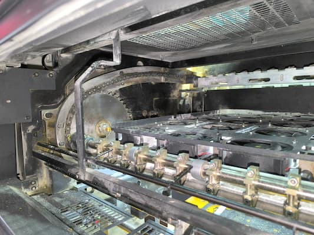
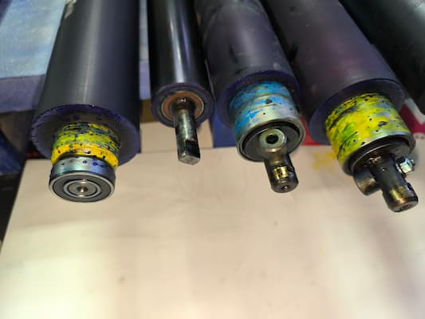
В ежемесячное ТО, кроме выше перечисленных работ, добавляются работы по смазке контрольных точек, предусмотренных регламентом на этом этапе эксплуатации, проводится юстировка валов красочного и увлажняющего аппарата. Если в красочные ящики (кипсеки) предусмотрена установка пленки, то эта пленка меняется. (фото 4)Валы красочной группы обрабатываются пастой для глубокой очистки и проверяются на наличие «глазури». Проводится промывка и очистка системы увлажнения с заменой всех фильтров. Для промывки применяются специально предназначенные для этого химические растворы, дозировка и время промывки должно быть указано в инструкции по их применению. Заливается новый увлажняющий раствор. (фото 5,6,7) Проводится чистка «листопроводки», захватов на печатных и переводных цилиндрах, (фото 8,9) чистка «таскалок» и цепей на приемке. (фото 10)Очищаются радиаторы охлаждения вспомогательного и холодильного оборудования.
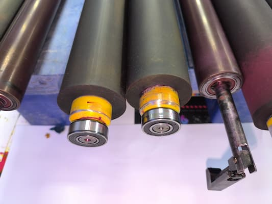
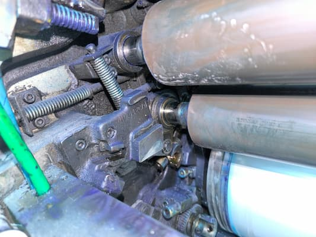
В ежеквартальное ТО, кроме выше перечисленных работ, добавляются работы по смазке контрольных точек, предусмотренных регламентом на этом этапе эксплуатации, а также работы по демонтажу валов красочного и увлажняющего аппарата, чистка торцов от застарелой краски, проверка состояния подшипников, проверка диаметров валов и последующая их юстировка. (фото 11,12) Проводится чистка станин и проверка состояния замков на валах. (фото 13,14) Проводятся посекционные замеры «толщиномером» превышения форм и офсетного полотна относительно контактных колец, проверяется поддекельный материал и при необходимости меняется офсетное полотно. (фото 15) Проводится чистка форсунок смывочной системы и пудрильного аппарата.
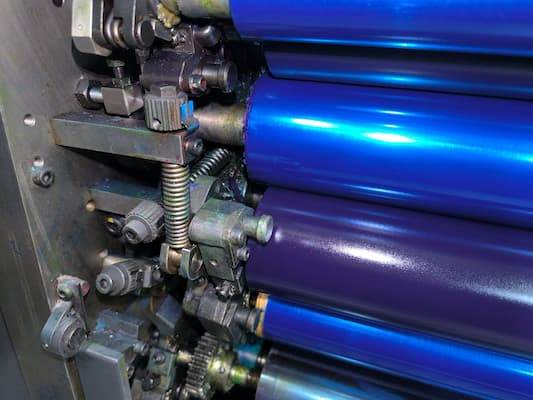
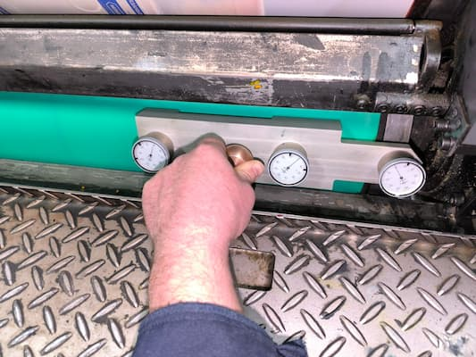
В ежегодное ТО добавляются работы по смазке контрольных точек, предусмотренных регламентом на этом этапе эксплуатации, полностью меняется масло и фильтра в масляных гидростанциях и агрегатах вспомогательного оборудования. Проводится плановая замена валов красочного и увлажняющего аппарата с заменой подшипников. Проводятся работы по проверке технического состояния печатных пар, определяется остаточный ресурс печатного оборудования. Проверяются все приводные ремни и транспортерные ленты на наличие износа и трещин, при необходимости меняются.

При проведении каждого ТО организовывается профилактический осмотр и текущий ремонт оборудования
Карту смазки машин можно рассмотреть на примере машины HEIDELBERG Speedmaster SM 74 где символами разных цветов указана периодичность смазки того или иного узла. (фото 16)